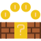

<!--
  Generated template for the PontuarPage page.

  See http://ionicframework.com/docs/components/#navigation for more info on
  Ionic pages and navigation.
-->
<ion-header>

  <ion-navbar color="primary">
    <ion-title>Pontuar</ion-title>
  </ion-navbar>

</ion-header>


<ion-content padding>
  <h1 text-center color="primary">
    
  </h1>
  <ion-item>
    <ion-label>Chapou - {{rBebeu}} pt</ion-label>
    <ion-checkbox checked="false" [(ngModel)]="pontos.cBebeu"></ion-checkbox>
  </ion-item>
  <ion-item>
    <ion-label>Pegou (6 baixo) - {{rPegouB}} pt</ion-label>
    <ion-checkbox checked="false" [(ngModel)]="pontos.cPegouB"></ion-checkbox>
    <ion-note item-end min="0">
      {{qtderPegouB}}x
    </ion-note>
    <button ion-button clear item-end icon-only (click)="addrPegouB($event)">
      <ion-icon name="add-circle"></ion-icon>
    </button>
    <button ion-button clear item-end icon-only (click)="removerPegouB($event)">
      <ion-icon name="remove-circle"></ion-icon>
    </button>
  </ion-item>
  <ion-item>
    <ion-label>Pegou (6 alto) - {{rPegouA}} pt</ion-label>
    <ion-checkbox checked="false" [(ngModel)]="pontos.cPegouA"></ion-checkbox>
    <ion-note item-end min="0">
      {{qtderPegouA}}x
    </ion-note>
    <button ion-button clear item-end icon-only (click)="addrPegouA($event)">
      <ion-icon name="add-circle"></ion-icon>
    </button>
    <button ion-button clear item-end icon-only (click)="removerPegouA($event)">
      <ion-icon name="remove-circle"></ion-icon>
    </button>
  </ion-item>
  <button ion-button block color="secondary" (click)="pontuar(pontos)">Salvar</button>
</ion-content>